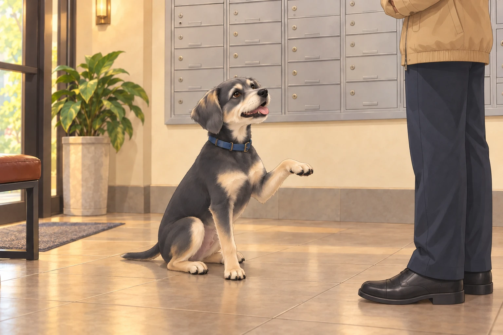
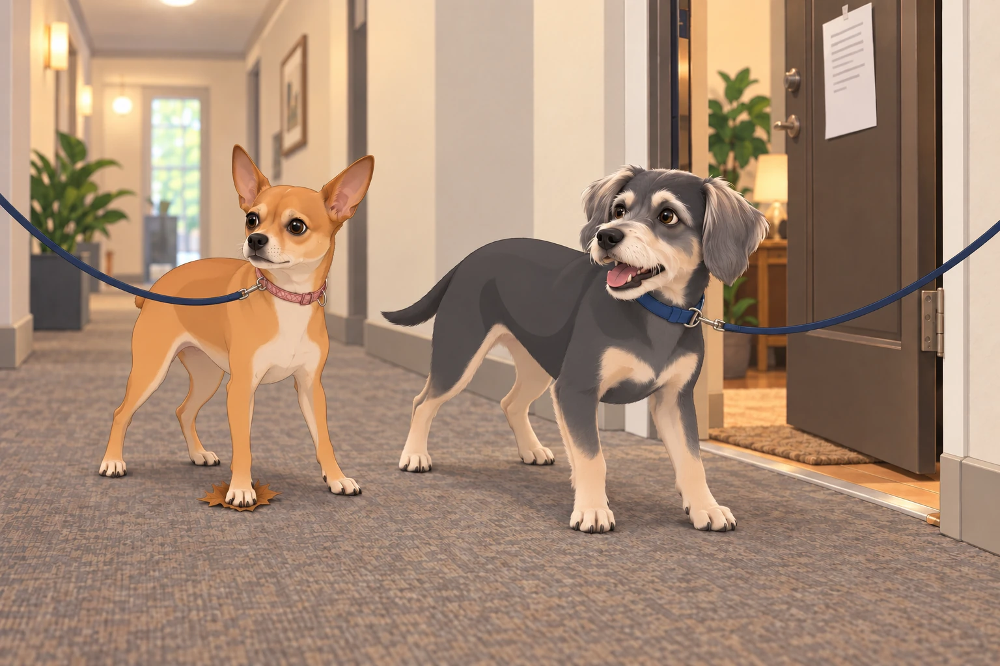

Saturday: The Park Patrol Ritual
It was an ordinary weekend morning, the kind where Neet and Buddy, the dynamic doggy duo, emerged from their apartment like clockwork. The scent of bacon in the hallways (from Apartment 4C, always teasing) was their cue. With leashes clipped and tails wagging, they trotted down the hall for their Ritual of Supreme Importance: the Perimeter Check™ of Greenwood Park.
Buddy, the self-appointed park marshal, took the lead, ears perked, nose twitching. Neet followed with her signature sashay— elegant but alert, because you never know when a rogue squirrel might try something sneaky.
As usual, the park was teeming with potential threats: Labradoodles wearing vests that said “Anxiety Dog,” retirees speed-walking like there was an Olympic event for it, and, worst of all, a golden retriever named Riley who had the nerve— the audacity— to exist near their bench.
BARK. BARK. WOOF. Grrr.
Neet and Buddy unleashed their full-volume commentary on the situation, while their human frantically tried to reel them in. Children giggled. Joggers gave them wide berths. All was right in the world.
Operation: Spa Day
Post-park chaos led directly to the most dreaded part of the weekend: the Shower of Shame™.
Neet braced herself against the tiled walls of the bathroom as if she were in a crime noir film. Meanwhile, Buddy howled like a banshee during his nail trim, convinced the clippers were part of a government plot.
“BATH TIME IS A LIE,” Buddy barked between shrieks.
“You can’t cleanse what is already clean!” Neet yelped.
Eventually, they emerged, fluffy and furious, smelling like lavender oatmeal and betrayal.
Sunday: The Manager Strikes Back
The next evening, fresh from a squirrel chase and reeking of self-confidence, Neet and Buddy strutted into the building lobby— only to come face-to-face with The Manager.
Mr. Grubbs. Beige windbreaker. Clip-on tie. The sort of man who could make a noticeboard look underdressed.
He narrowed his eyes at them like a border patrol agent at a suspiciously fluffy suitcase.
“You,” he said, pointing to Neet. “And you.” He jabbed toward Buddy. “There are two of you. This building has a strict one-dog-per-apartment policy.”
Their human tried to explain: “They’re small. Compact. Spiritually one dog.”
Grubbs was not moved. “Expect a notice.”
And he stormed off, muttering something about bylaws and chaos.
Neet Goes Underground
From that day forward, Neet became a fugitive. A shadow. A whisper.
When it was time for walks, Buddy would stroll out proudly, like the king of the world, while Neet clung to the shadows like she was in a Mission: Impossible movie. She refused the elevator. Too risky. She preferred the stairs— even if it meant dragging her leash up five flights like she was scaling Everest.
Buddy would wait at the bottom, staring blankly at the elevator doors.
“She’s doing the thing again,” he’d sigh.
The elevator opened. Empty. Buddy looked up the stairs and settled in for the slower dog-delivery service.
Neet even developed a full-on evasion routine. She’d peek around corners before walking. If she heard footsteps in the hall, she’d drop like a soldier under sniper fire and belly-crawl back inside. One time, she dove into a laundry basket on wheels and stayed there for fifteen minutes while the manager chatted with Mrs. Fernstein in the lobby.
Buddy’s Attempt at Diplomacy
Buddy wanted to get back to taking walks together. He decided to try the greeting that worked on nearly everyone else: diplomacy.
He intercepted Mr. Grubbs one afternoon near the mailboxes and executed a flawless sit-paw-smile combo.

Grubbs scowled. “Nice try, mutt.”
Buddy peed on his shoe.
He kept the smile for a moment. Then, recognizing that the meeting had changed direction, he lowered his paw.
The Letter of Doom
A week later, the official Notice arrived: “Violation of Pet Policy – Immediate Compliance Required.”
It was affixed to their door like a scarlet letter. Neet stared at it for three minutes straight, then began plotting.
She tried wearing sunglasses. “Maybe if he thinks I’m a different dog,” she whispered.
Buddy tried fitting Neet into his backpack. “We’ll say I’m a service dog. And you’re emotional support luggage.”
They even attempted synchronized walking— side by side, pretending to be a single, unusually wiggly dog— but this only drew more attention.
The Great Stakeout
That Saturday, Neet orchestrated a full surveillance operation. She perched by the peephole for hours, logging every movement in the hallway.
“Grubbs passed at 2:17pm. Holding envelope. Eyes darting. Possibly hunting. Confirm pattern.”
Buddy, wearing his “I’m Just Visiting” bandana, offered distractions. Barking at random walls. Knocking over plant pots in the hallway. Drawing suspicion to himself so Neet could sneak out unnoticed.
“I am the bait,” he whispered solemnly, tail wagging.
From cover, Neet watched him knock over a second pot.
“You can be less convincing.”
The Final Straw (That Was Actually a Leaf)
One afternoon, as they snuck back inside after a walk, Neet stepped on a crunchy leaf in the hallway. CRRRUNCH. Grubbs popped out of nowhere like a B-grade horror villain.
“Hey!”
Neet froze mid-step, eyes wide.
Buddy barked: “RUN!”

They took off, leash flying, tail fur on fire, careening down the hall and into their apartment. Their human got both dogs inside, shut the door and worked through all four bolts. Buddy stayed clear of the leash while Neet listened for footsteps.
They sat in silence. Panting. Eyes wide.
“Okay,” Neet said. “New plan.”
Buddy looked toward the door. “Does it involve sweeping?”
Operation: Legal Loophole
By Monday, their human had contacted the building’s HOA with a polite but firm email: “Technically, they share a food bowl. Emotionally, they’re one dog.”
Pending review.
Until then, Neet remains on high alert. The towels for Spa Day have been hidden under the couch. The staircase route is now marked with escape plans. And Buddy?
He’s been practicing his innocent face. Just in case.
He holds the expression while Neet tests the hiding place beneath the couch. She has left just enough room for the towels.
Their human reaches down for one. A paw draws it farther into the darkness.
Buddy makes his face even more innocent.